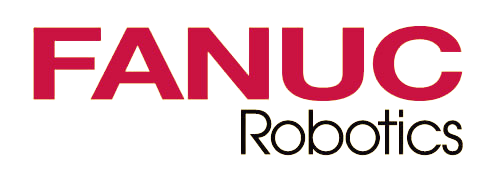

Róbotica - Sustentavel
Robótica sustentável desenvolve robôs com materiais recicláveis, eficiência energética e fontes renováveis.
Visa reduzir desperdício e poluição, aplicando-se em áreas como agricultura de precisão e gestão de resíduos. Promove práticas ecológicas, otimização de processos industriais e a conservação ambiental.

Empresas
